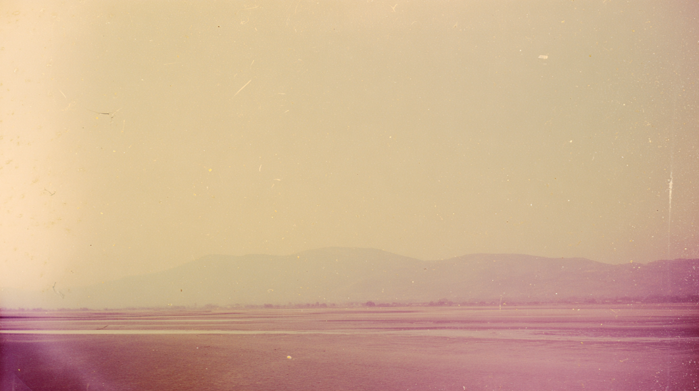

Weathered stone steps emerge from wind-swept sand, their edges softened by time and drifting desert dust.
Visitors stand beside massive stone blocks at the base of an ancient stepped structure under a clear, sunlit sky.
Terraced desert hills unfold toward a dramatic mountain ridge, the landscape washed in warm, dusty light.
Softly eroded desert ridges stretch into a hazy horizon, their layered forms fading into pale mountains beyond.
A solitary stepped monument rises from a vast open plain, centered against a muted mountain backdrop under a bright sky.
tomb of Cyrus in the distance sat on dessert flat surrounded by distant hills barely visible through haze, faded analogue photograph, sun-bleached colours, subtle dusty pink and muted ochre tones, soft film grain, overexposed sky swallowing detail, heat shimmer distortion, empty space dominating frame, edges dissolving into white, subtle light leaks, imperfect composition, 35mm kodachrome, muted natural colors, low contrast grading, soft highlights, hazy atmosphere, arid heat. warm sky, soft warm reflections on wet sand. Light film grain, organic texture, low digital sharpness, no vivid colours. Shot like contemporary cinema, realistic, alive, subtle faded blurry shutter motion